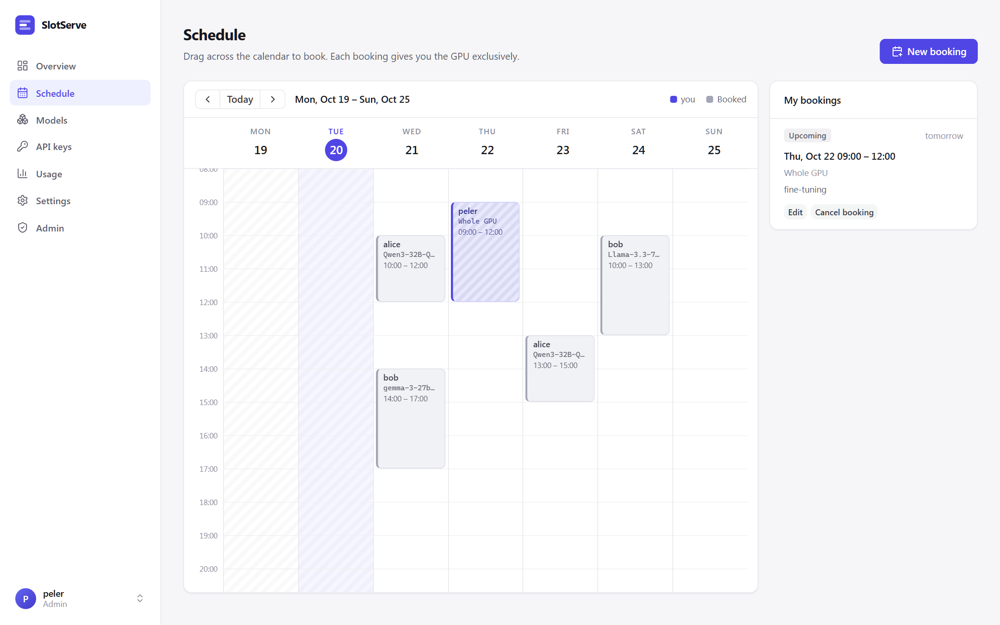
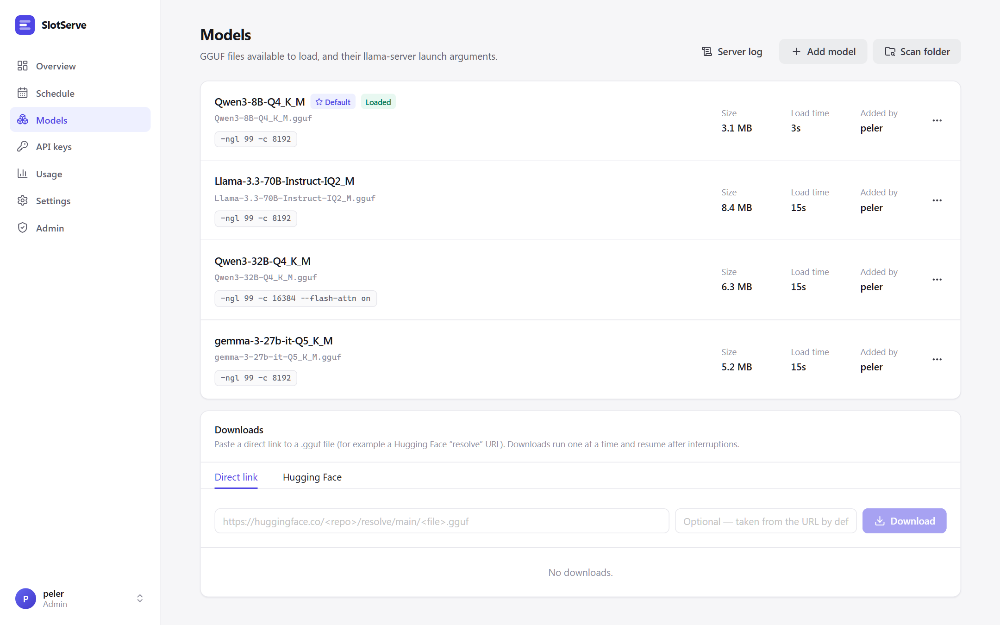
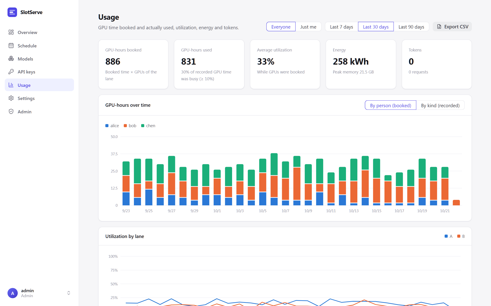
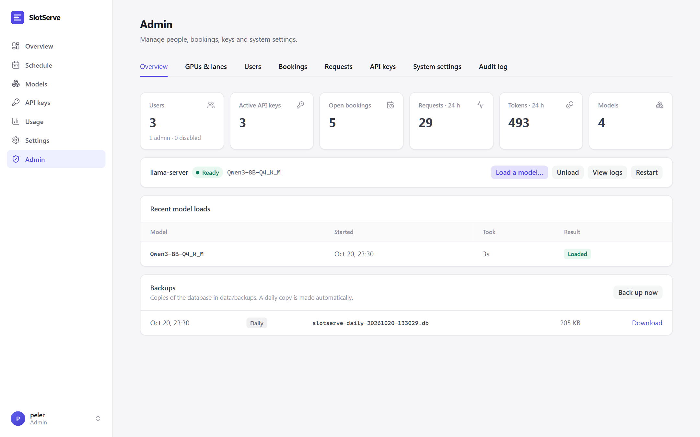

User guide¶
Booking the GPU¶
Open Schedule and drag across the calendar, or press New booking. Choose what to book, adjust the time and add an optional note.

- Bookings snap to 30-minute slots (configurable) and cannot overlap.
- A slot that has already started can still be booked; it starts now. Start now in the dialog does this for you.
- The dialog shows the model's estimated load time. If someone else's booking ends exactly when yours starts and uses a different model, loading happens inside your slot and the dialog warns you.
- During your booking only your API keys are accepted.
- Cancel an upcoming booking, or End now to release the GPU early. The default model comes back right away.
Booking types¶
| Type | What happens during the slot |
|---|---|
| Run a model | Your model (optionally with one of its presets) is loaded before the slot starts. Only your API keys are accepted. |
| Whole GPU | The model server is stopped shortly before the slot, so the GPU is completely free for training or any other program. The API returns 503 gpu_exclusive. The default model comes back when the slot ends. |
| Dev environment | A Docker container with the GPU and SSH runs for the slot; your /workspace is kept. See Dev environments. |
Changing bookings¶
- Edit an upcoming booking to move it or change its model, preset or note.
- Extend a running booking by 30 minutes, 1 hour or 2 hours, if the time after it is free. You can also shorten it with Edit.
- Repeat weekly creates the same slot for several weeks. Either every week fits, or nothing is booked and the dialog says which week clashes. Cancelling one booking of a series asks whether to cancel only that one or the rest of the series as well.
- Admins can edit or cancel anyone's booking and book for someone else. The person is notified on the chat platforms they linked.
Waitlist¶
If the time you want is taken, the dialog offers Join waitlist. When that time frees up (a cancellation or an early end), SlotServe books it for you automatically, or just notifies you if you unticked Book automatically. Your open waitlist entries appear under My bookings.
Lanes and approval¶
With several GPU groups ("lanes"), the calendar shows a tab per lane and the booking dialog asks which lane to book. When approval mode is on, the dialog says if your booking needs an admin's approval; it then shows as Awaiting approval and you are notified of the decision. See GPUs, lanes & engines.
Quotas¶
Admins can limit how many hours one person may book per calendar week and how many open bookings they may hold. The limits do not apply to admins.
Models¶
Models lists every registered model with its engine, size, estimated load time and launch arguments.

- Scan folder registers new
.gguffiles from the models directory as llama.cpp models. - Add model registers a model by hand: pick the engine (llama.cpp, vLLM, SGLang or custom) and give a file, directory or Hugging Face repository.
- Edit changes the name (the
modelid clients see), launch arguments and description. The person who added a model and admins can edit or delete it. - Set as default (admin) chooses the model used when nobody has booked the GPU. With several lanes this sets the first lane's default; other lanes are set in Admin → GPUs & lanes.
- Server log shows the tail of the model server's output - the first place to look when a model fails to start.
- Presets (in Edit) store alternative argument sets for the same file, for example a long-context variant with a larger
-c. People pick a preset when booking; the model's own arguments are the default.
Model catalog¶
The Catalog tab lists popular open models with exact download sizes, an estimate of the GPU memory each variant needs and whether it fits on each lane. Deploy downloads a variant through the queue below and registers it with suitable launch arguments. See Model catalog.
Downloading models¶
Paste a direct link to a .gguf file and press Download, for example:
https://huggingface.co/<user>/<repo>/resolve/main/<file>.gguf
https://hf-mirror.com/<user>/<repo>/resolve/main/<file>.gguf
Or open the Hugging Face tab, enter a repository such as Qwen/Qwen3-8B-GGUF and press List files. Pick the quantizations you want; split models are grouped and all parts are queued. Set Hugging Face endpoint (for example https://hf-mirror.com) and Hugging Face token in the admin settings if needed.
Downloads run one at a time, write to <file>.part and resume from where they stopped if retried. A finished .gguf is registered automatically. For split models (-00001-of-0000N.gguf) add every part; the first part becomes the model.
API keys¶
Access credentials → New key creates a key and shows it once. Store it in your client or a secret manager. Revoke a key to stop it immediately.
If an admin turns on Let people view their API keys again (Admin → System settings → Accounts), SlotServe keeps an encrypted copy of each new key and its owner can press View to see it later. Keys created while the switch is off cannot be shown, and turning it off deletes every stored copy. The copies are encrypted with SLOTSERVE_SECRET_KEY; changing that key makes them unreadable. See API for client setup.
The same page holds your SSH public keys and environment password for dev environments when they are switched on.
Usage¶
Usage is about GPU time: how much was booked, how much of it the GPUs actually worked, and what that cost in energy. Pick the last 7, 30 or 90 days, and Everyone or Just me (everyone can see everyone's usage).
- Tiles: GPU-hours booked (booked time × the number of GPUs in the lane), GPU-hours used (time a GPU's utilization was at or above the busy threshold, 10 % by default), average utilization while GPUs were booked (or during your bookings), energy with peak memory, and tokens with requests.
- GPU-hours over time: stacked by person (booked, from the calendar) or by kind (recorded). Kinds are model bookings, whole-GPU bookings, dev environments, shared use while nobody has the lane booked (the lane's idle model or a shared environment) and unused time. Up to 7 days are shown in 6-hour steps, longer periods per day.
- Utilization by lane over time.
- Tables by person (booked and used GPU-hours, utilization while booked, peak memory, energy, tokens), by lane with its occupancy, by kind, by GPU and by model. Many booked hours with low utilization means GPUs are booked but sit idle.
SlotServe records every GPU once a minute: utilization, memory, power and who held it as what. On machines without GPU metrics (no nvidia-smi) it still records who held each lane, but used time, utilization, memory and energy stay empty. Per-minute samples are folded into hourly totals after 30 days (Admin → System settings → Maintenance). Export CSV downloads per-person totals, GPU time per day, lane, GPU, kind and person, a daily request summary, or every request.
Settings¶
- Appearance: language and light, dark or system theme. The same choices are in the menu under your name, and the sign-in page has a light/dark button.
- Chat notifications: link Telegram, Feishu / Lark, DingTalk, WeCom or QQ and choose which notifications you get. See Notifications & integrations.
- Calendar subscription: private links that show bookings in your calendar app.

Administration¶
The first account (created with the setup code) is the admin. Admins see an Admin entry in the sidebar.

| Tab | What you can do |
|---|---|
| Overview | Counts of users, keys, open and pending bookings, requests and tokens in the last 24 h; recent model loads with failures; restart a lane's model server and read its log; load a model now or unload while nobody has the GPU booked, for a set time or until the next booking |
| Runtime monitor | Per lane: state, model, engine, GPUs, port, PID, running requests and what the scheduler wants; loading progress read from the server's output (or estimated); on failure the error, exit code, retry countdown and the server's last lines; the exact launch command; live server output with filter, pause and download; every load with its command and output excerpt |
| GPUs & lanes | Detected GPUs; create, edit and delete lanes and choose each lane's default model; edit the launch arguments of the model a lane is running and reload it |
| Users | Create users (no invite code needed), reset passwords, grant or remove admin, disable, enable or delete accounts |
| Bookings | Every booking, filtered by status or person; approve or reject requests; edit, cancel or end any booking; book for someone else |
| Requests | Every API request with person, key, model, status, duration and tokens; filter to errors |
| Overview → Backups | Daily database copies; back up now and download |
| API keys | Every active key with its owner and last use; revoke any key |
| Chat channels | Whether each chat bot is connected and how many people linked it, the WeCom callback URL, group webhook tests and announcements |
| System settings | Every operational setting: registration, booking limits and quotas, approval, preloading and timeouts, engine commands, downloads, chat platforms and group webhooks, retention and backups |
| Audit log | Who did what and when, for every admin action |
Rules that protect the system:
- You cannot disable, demote or delete your own account, and at least one active admin always remains.
- Disabling an account signs it out, refuses its API keys and cancels its open bookings. Enabling it again restores the keys.
- Deleting an account also deletes its keys, bookings and usage history. Disable instead if you want to keep the history.
- System settings take effect immediately and are stored in the database, overriding
.env.